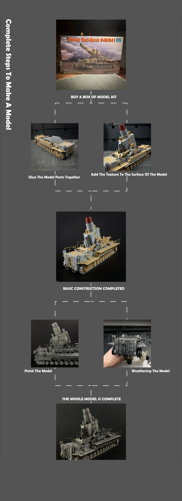

*STEP #1*
If there is one important tank, that I have never built, it is Tiger. Given that I have been building models for the past almost 15 years, it surprises me that I never got to finish a Tiger. I have tried and one of those attempts was sitting on my shelf for quite a few months (maybe years?) now. Recently it fell victim to my effort to reduce the number of shelf queens.
The model is from Dragon, or rather their cyber-hobby brand and depicts early version of the tank from the time of Battle of Kursk or shortly afterwards.
The quality is what one would expect from Dragon. Nice molding and very good level of detail, (with some exceptions) very good fit of the parts. In my effort to finish the model, I have decided to avoid going too much into photo etch aftermarket parts, but at the end some of them found their way on the model. AS with most of the Dragon’s models, the one challenging aspect of construction is trying to decipher the instructions. One particular part of the kit, where Dragon absolutely dropped the ball was the mounting of the idler wheels. As far as I found out, the parts for the mounts are completely incompatible with the lower hull tub. Simply there is nothing in the instructions and the parts are simply not fitting at all. At the end, I have been able to mount the idler wheels relatively OK, but it is too big mistake to make in such a model.
Interesting aspect of the kit design is that the road wheels are molded in set of four wheels connected by plastic ribs, as can be seen on the pictures. Orthodox model builders can remove these if they want, but otherwise it is not unreasonable idea, given that it helps to align the wheels better and the connecting parts are completely hidden once you attach all the wheels and mount the tracks.
From the wide range of the available aftermarket parts, I have decided to use the Friul tracks, I think they are great in terms of detail and they fit perfectly. Also the barrel was replaced with aluminium one.
Now with everything in place I am happy to be able to move on to painting.
*STEP #2*
Sooo, long time no hear… It has been quite a while since I have last posted anything and truly I am not spending much time modelling these days. My other hobbies have taken over most of my free time and due to the events of the last months I have been working from home, so the last thing I want after spending the whole day behind my desk in the basement is building models in the basement…
But hopefully I will be able to find some more time in the coming months.
In any case, I though I would post at least some of the progress I have made over the past months. This one is the Tiger 1 that I had on my desk for quite some time (as usual). I had it painted, not that i would be too happy with the camo, but it is good enough and I want to spend more time weathering and add bit more “richness” in that way.
Wheels were already largely weathered, I finished them almost completely before mounting them on the vehicle, i feel that it would be difficult weathering the inner wheels once mounted, so hence the order.
*STEP #3*
As mentioned in my previous post, the last kit I got on Sunday is the Dragon’s Tiger I Mid Command Version, Winter 1943 production. Quite a long name, but given the number of Tiger variants I guess there is no other way to differentiate between all of them.
Now, I don’t consider myself a “Tigeroholic”, at least I haven’t built any Tiger so far. Nevertheless, when I counted the number of Tiger kits in my stash I came to number 5, meaning I might be exhibiting some early symptoms. I definitely don’t consider myself an expert on Tiger tanks, proof of which is the fact, that I have picked up this kit in a mistaken belief that it could be built without the need to add coat of zimmerit. After a short investigation on the internet I found out that this might be actually one of the first versions of Tiger I with zimmerit. A short study of the different versions and their representation in 1/35 scale reveals that while dragon has already produced quite a few versions of Tiger I, most of these are variations on the late version of this tank, all of them with zimmerit coat. There is Dragon’s Initial version, but this is simply too early version. Anybody looking to build the Tiger from the period between Kursk battle and end of 1943, is limited to the old Tamiya kit.
Even though I haven’t got exactly the Tiger version I was looking for, I cannot be unimpressed with the kit. The level of detail is almost unmatched among the plastic kit producers and Dragon pays attention to every part of the vehicle. I was surprised to find details molded in very fine quality even at the bottom of the turret, which will be quite invisible once the kit is built (of course unless you plan to depict destroyed vehicle with its turret blown away upside down).
It is almost heartbreaking to see all the beautifully molded details on the wheels – e.g. welding lines, etc…, which will most likely get lost in the weathering process if you intend to simulate the level of dust and dirt that these vehicles were usually covered with. I am always struggling to balance the weathering so that at least a bit of this is visible on the finished model, though you might argue the final look is not “true” to reality.
What I noticed is that the kit consists of sprues different from the previous kits. If you compare Dragon’s Alfred Kurzmaul kit nr. 6416 and Late Tiger I 3-in-1 kit nr.6406, you will quickly find out most of the sprues are the same. For this kit however, the sprues are new, so there are not so many redundant parts.
One thing I am normally looking to replace on the models are the tow cables. When I closely inspected the tow cables on this kit and quality with which they are reproduced, this might not be necessary as the details is very fine and after painting you almost wouldn’t be able to tell the difference. Molded-on tool bracket holders would definitely be replaced with photoetch ones, Dragon still has some place for improvement here.
Dragon as usually included also pre-formed PE engine grills, photoetch sheet of decent size, as well as few other helpful metal parts. One part that I might replace are the tracks. The kit contains DS tracks, which somehow I can’t get to like. My preference would be for the single-link tracks, which might be more time-consuming to assemble, but I believe offer little better level of detail.
There are 4 markings offered in this kit, one for Italian theater of war and 3 for Eastern front – of these one is vehicle in white wash camo during the Korsun pocket battles in early 1944 and the other two from the operations around Tarnopol in April 1944.
Overall I think this is a great kit, I would only wish that Dragon would use their know-how producing also other subjects than just German WWII panzers.
You can see more pictures of the built model here.
*STEP #4*
What I noticed is that the kit consists of sprues different from the previous kits. If you compare Dragon’s Alfred Kurzmaul kit nr. 6416 and Late Tiger I 3-in-1 kit nr.6406, you will quickly find out most of the sprues are the same. For this kit however, the sprues are new, so there are not so many redundant parts.
One thing I am normally looking to replace on the models are the tow cables. When I closely inspected the tow cables on this kit and quality with which they are reproduced, this might not be necessary as the details is very fine and after painting you almost wouldn’t be able to tell the difference. Molded-on tool bracket holders would definitely be replaced with photoetch ones, Dragon still has some place for improvement here.
Dragon as usually included also pre-formed PE engine grills, photoetch sheet of decent size, as well as few other helpful metal parts. One part that I might replace are the tracks. The kit contains DS tracks, which somehow I can’t get to like. My preference would be for the single-link tracks, which might be more time-consuming to assemble, but I believe offer little better level of detail.
There are 4 markings offered in this kit, one for Italian theater of war and 3 for Eastern front – of these one is vehicle in white wash camo during the Korsun pocket battles in early 1944 and the other two from the operations around Tarnopol in April 1944.
Overall I think this is a great kit, I would only wish that Dragon would use their know-how producing also other subjects than just German WWII panzers.
You can see more pictures of the built model here.
